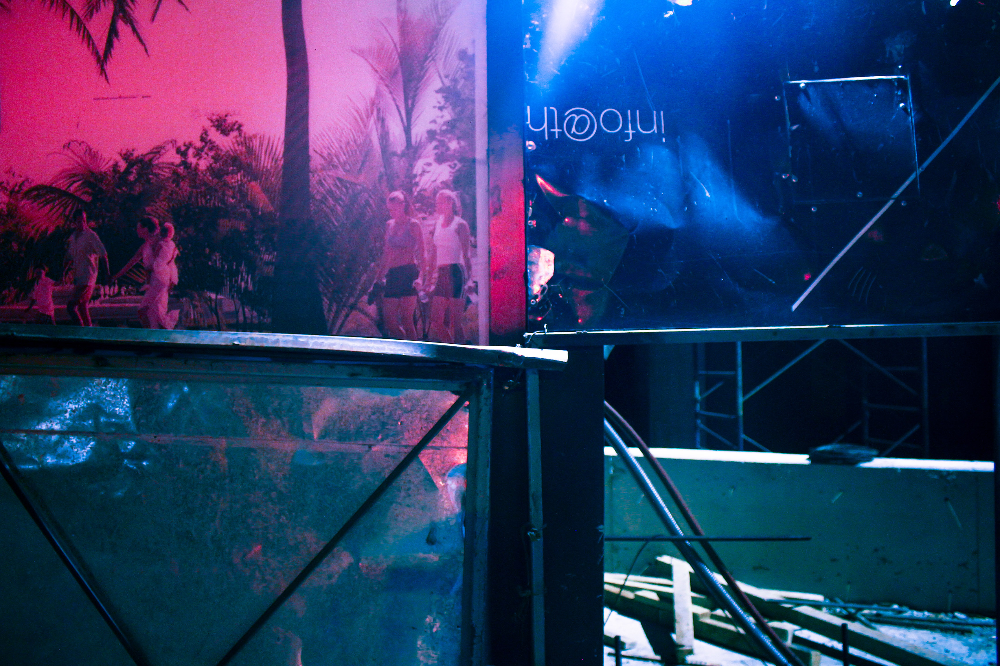
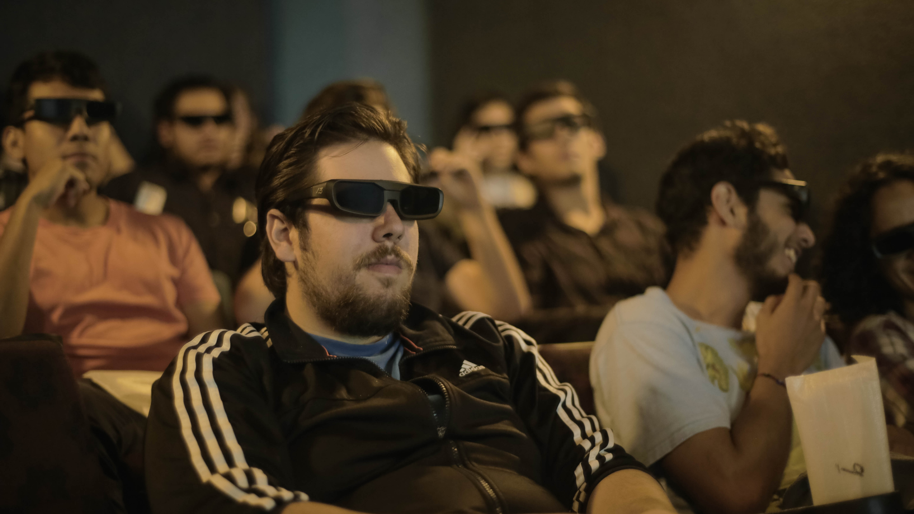

M Y / / W O R K
/ Click en las imágenes para agrandarlas //



F O T O / / / C O M E R C I A L



About
Soy un joven mexicano apasionado de la fotografía y la edición de esta misma. Estudiante de la carrera de Artes audiovisuales orientadas a Multimedia en el CAAV. Realizador audiovisual, trabajando en las áreas de dirección, fotografía y post-producción, siendo las últimas 2 donde más práctica tengo y dónde he querido enfocar mi desarrollo. Buscando siempre un trabajo estético, con un estilo muy marcado tanto en el uso de luces como en la post-producción, donde me dedico más al color grading. Hago fotografía fija, trabajo en el CAAV, Universidad de medios audiovusales, en el área de publicidad, tomando fotografías de las prácticas de los alumnos. Tengo experiencia en fotografía de producto, urbana y también en fotografía de eventos sociales. Apasionado de los videojuegos, actualmente estoy planeando uno propio.
Habilidades:
/ Click en las imágenes para agrandarlas //
Contactame en cualquiera de mis redes sociales!
Deja un mensaje